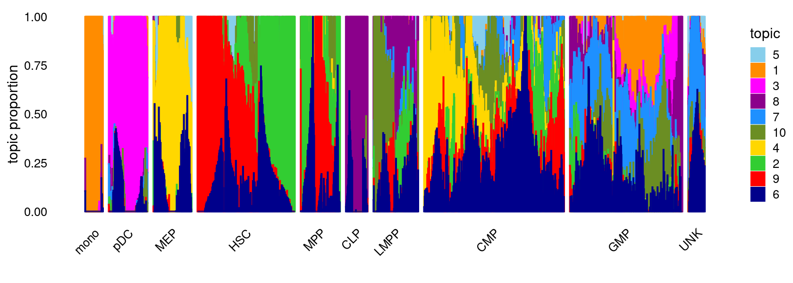
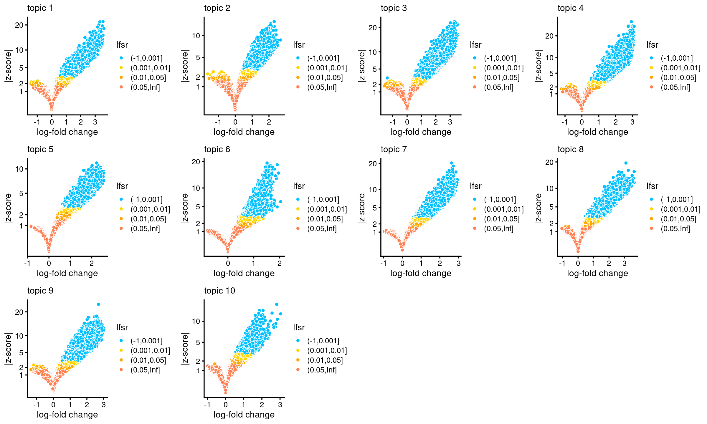
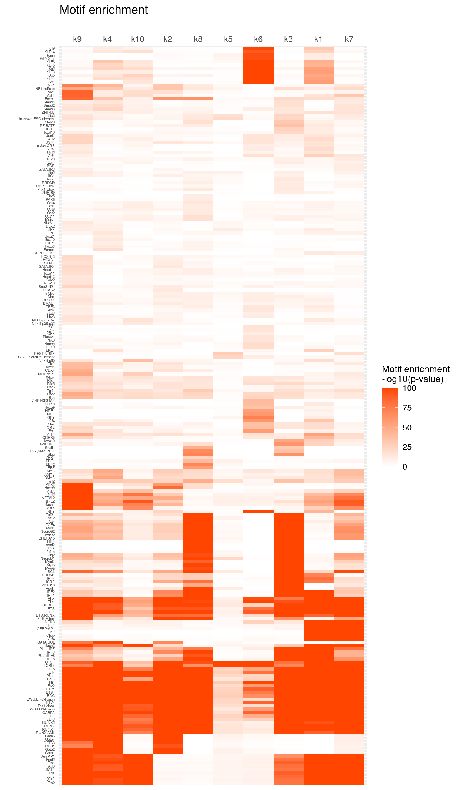
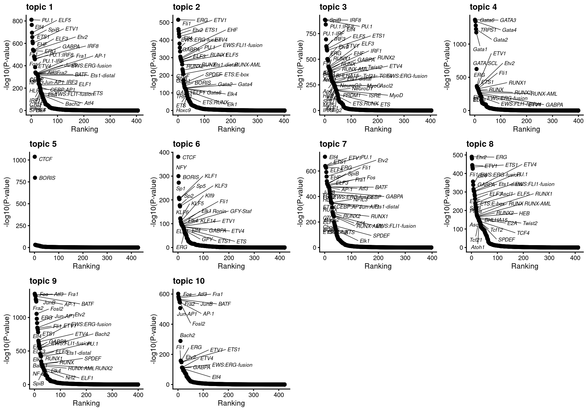
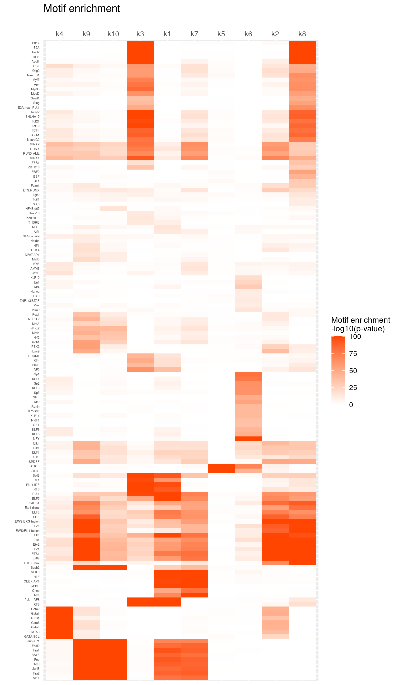
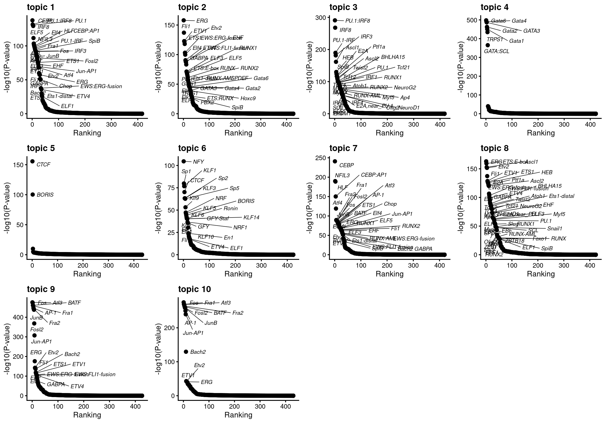

Last updated: 2022-03-29
Checks: 7 0
Knit directory: scATACseq-topics/
This reproducible R Markdown analysis was created with workflowr (version 1.7.0). The Checks tab describes the reproducibility checks that were applied when the results were created. The Past versions tab lists the development history.
Great! Since the R Markdown file has been committed to the Git repository, you know the exact version of the code that produced these results.
Great job! The global environment was empty. Objects defined in the global environment can affect the analysis in your R Markdown file in unknown ways. For reproduciblity it's best to always run the code in an empty environment.
The command set.seed(20200729) was run prior to running the code in the R Markdown file. Setting a seed ensures that any results that rely on randomness, e.g. subsampling or permutations, are reproducible.
Great job! Recording the operating system, R version, and package versions is critical for reproducibility.
Nice! There were no cached chunks for this analysis, so you can be confident that you successfully produced the results during this run.
Great job! Using relative paths to the files within your workflowr project makes it easier to run your code on other machines.
Great! You are using Git for version control. Tracking code development and connecting the code version to the results is critical for reproducibility.
The results in this page were generated with repository version 20907b9. See the Past versions tab to see a history of the changes made to the R Markdown and HTML files.
Note that you need to be careful to ensure that all relevant files for the analysis have been committed to Git prior to generating the results (you can use wflow_publish or wflow_git_commit). workflowr only checks the R Markdown file, but you know if there are other scripts or data files that it depends on. Below is the status of the Git repository when the results were generated:
Ignored files:
Ignored: .DS_Store
Ignored: .Rhistory
Ignored: .Rproj.user/
Untracked files:
Untracked: analysis/motif_analysis_Buenrostro2018_v2.Rmd
Untracked: output/clustering-Cusanovich2018.rds
Untracked: paper/
Untracked: scripts/DA_Buenrostro2018_filteredpeaks.sbatch
Untracked: scripts/postfit_Buenrostro2018_filteredpeaks.sbatch
Untracked: scripts/postfit_Buenrostro2018_v2.sbatch
Unstaged changes:
Modified: analysis/assess_fits_Buenrostro2018_Chen2019pipeline.Rmd
Modified: analysis/clusters_Cusanovich2018_k13.Rmd
Modified: analysis/gene_analysis_Buenrostro2018_Chen2019pipeline.Rmd
Modified: analysis/gene_analysis_Cusanovich2018.Rmd
Modified: analysis/index.Rmd
Modified: analysis/motif_analysis_Buenrostro2018_Chen2019pipeline.Rmd
Modified: analysis/motif_analysis_Cusanovich2018.Rmd
Modified: analysis/plots_Cusanovich2018.Rmd
Modified: scripts/DA_analysis_Buenrostro2018_vsnull.R
Modified: scripts/analysis_Buenrostro2018_filteredpeaks.sh
Note that any generated files, e.g. HTML, png, CSS, etc., are not included in this status report because it is ok for generated content to have uncommitted changes.
These are the previous versions of the repository in which changes were made to the R Markdown (analysis/motif_analysis_Buenrostro2018_k10_filterpeaks.Rmd) and HTML (docs/motif_analysis_Buenrostro2018_k10_filterpeaks.html) files. If you've configured a remote Git repository (see ?wflow_git_remote), click on the hyperlinks in the table below to view the files as they were in that past version.
| File | Version | Author | Date | Message |
|---|---|---|---|---|
| Rmd | 20907b9 | kevinlkx | 2022-03-29 | added motif enrichment result using the top 1% regions |
| html | 0ce1017 | kevinlkx | 2022-03-29 | Build site. |
| Rmd | 2b53fee | kevinlkx | 2022-03-29 | added motif enrichment result using the top 1% regions |
| html | 85d9415 | kevinlkx | 2022-03-29 | Build site. |
| Rmd | 40f690f | kevinlkx | 2022-03-29 | updated DA and motif analysis using data with filtered peaks |
Here we perform TF motif enrichment analysis for the Buenrostro et al (2018) scATAC-seq result inferred from the multinomial topic model with \(k = 10\).
We use binarized data downloaded from original paper.
library(Matrix)
library(fastTopics)
library(dplyr)
library(tidyr)
library(ggplot2)
library(ggrepel)
library(cowplot)
library(plotly)
library(DT)
library(reshape2)
source("code/motif_analysis.R")
source("code/plots.R")Data downloaded from original paper.
data.dir <- "/project2/mstephens/kevinluo/scATACseq-topics/data/Buenrostro_2018/processed_data/"
load(file.path(data.dir, "Buenrostro_2018_binarized.RData"))
cat(sprintf("%d x %d counts matrix.\n",nrow(counts),ncol(counts)))
samples$cell <- rownames(samples)
samples$label <- as.factor(samples$label)# 2034 x 465536 counts matrix.Filtered out peaks with accessbility in fewer than 20 cells
i <- which(colSums(counts) >= 20)
peaks <- peaks[i,]
counts <- counts[,i]
cat(sprintf("After filtering, we have %d rows and %d columns left. \n",nrow(counts),ncol(counts)))# After filtering, we have 2034 rows and 126719 columns left.Load data after filtering peaks
res.dir <- "/project2/mstephens/kevinluo/scATACseq-topics/output/Buenrostro_2018/binarized/filtered_peaks"
load(file.path(res.dir, "Buenrostro_2018_binarized_filtered.RData"))
cat(sprintf("%d x %d counts matrix.\n",nrow(counts),ncol(counts)))
samples$cell <- rownames(samples)
samples$label <- as.factor(samples$label)# 2034 x 126719 counts matrix.Load the K = 10 topic model fit to data after peak filtering
fit <- readRDS(file.path(res.dir, "/fit-Buenrostro2018-binarized-filtered-scd-ex-k=10.rds"))$fit
fit <- poisson2multinom(fit)Structure plot
topic_colors <- c("darkorange","limegreen","magenta","gold","skyblue",
"darkblue","dodgerblue","darkmagenta","red","olivedrab")
set.seed(1)
# labels <- factor(samples$label, levels = c("HSC", "MPP", "CMP", "GMP", "mono", "MEP", "LMPP", "CLP", "pDC", "UNK"))
labels <- factor(samples$label, c("mono","pDC","MEP","HSC","MPP","CLP",
"LMPP","CMP","GMP","UNK"))
structure_plot(fit,grouping = labels,colors = topic_colors,
# topics = 1:10,
gap = 20,perplexity = 50,verbose = FALSE)
| Version | Author | Date |
|---|---|---|
| 85d9415 | kevinlkx | 2022-03-29 |
ns = 10000, nsplit =100, shrink.method = "ash", lfc.stat = "vsnull", i.e. comparing each topic with the average.Load DA analysis results with "ash" shrinkage (10000 MCMC iterations)
DA_dir <- "/project2/mstephens/kevinluo/scATACseq-topics/output/Buenrostro_2018/binarized/filtered_peaks/DAanalysis-Buenrostro2018-k=10"
DA_res <- readRDS(file.path(DA_dir, "DA_regions_topics_vsnull_ash_10000iters.rds"))
summary(DA_res)
dim(DA_res$z)# Length Class Mode
# ar 1267190 -none- numeric
# est 1267190 -none- numeric
# postmean 1267190 -none- numeric
# lower 1267190 -none- numeric
# upper 1267190 -none- numeric
# z 1267190 -none- numeric
# lfsr 1267190 -none- numeric
# lpval 1 -none- numeric
# svalue 1267190 -none- numeric
# ash 3 ash list
# F 1267190 -none- numeric
# f0 126719 -none- numeric
# [1] 126719 10Number of regions selected at different lfsr cutoffs:
sig_regions <- matrix(NA, nrow = 10, ncol = 3)
colnames(sig_regions) <- c("lfsr < 0.01", "lfsr < 0.05", "lfsr < 0.1")
rownames(sig_regions) <- paste("topic", 1:nrow(sig_regions))
for(k in 1:10){
lfsr <- DA_res$lfsr[,k]
sig_regions[k, ] <- c(length(which(lfsr < 0.01)), length(which(lfsr < 0.05)), length(which(lfsr < 0.1)))
}
sig_regions# lfsr < 0.01 lfsr < 0.05 lfsr < 0.1
# topic 1 15066 21034 25515
# topic 2 11164 18536 24600
# topic 3 15139 20590 25533
# topic 4 14210 19177 23482
# topic 5 15240 22228 26977
# topic 6 6892 9588 11650
# topic 7 13505 19528 24046
# topic 8 9983 17102 22741
# topic 9 13028 18154 22778
# topic 10 6605 10974 14385Volcano plots for DA result
plots <- vector("list",10)
names(plots) <- 1:10
for (k in 1:10)
plots[[k]] <- volcano_plot(DA_res, k, labels = rep("",nrow(DA_res$z)))
do.call(plot_grid,plots)
| Version | Author | Date |
|---|---|---|
| 85d9415 | kevinlkx | 2022-03-29 |
We performed differenital accessbility (DA) analysis with lfc.stat = "vsnull", i.e. comparing each topic with the average across topics.
We selected the significant peaks (regions) with lsfr < 0.01 to perform motif enrichment analysis using HOMER.
Load and compile HOMER results across topics
homer.dir <- "/project2/mstephens/kevinluo/scATACseq-topics/output/Buenrostro_2018/binarized/filtered_peaks/motifanalysis-Buenrostro2018-k=10-vsnull-ash/HOMER/DA_lfsr_0.01_regions"
cat(sprintf("Directory of motif analysis result: %s \n", homer.dir))
homer_res_topics <- readRDS(file.path(homer.dir, "/homer_knownResults.rds"))
selected_regions <- readRDS(file.path(homer.dir, "/selected_regions.rds"))
# Compile Homer results (pvalue and ranking) across topics
motif_res <- compile_homer_motif_res(homer_res_topics)
saveRDS(motif_res, paste0(homer.dir, "/homer_motif_enrichment_results.rds"))
cat("compiled homer motif results are saved in", paste0(homer.dir, "/homer_motif_enrichment_results.rds \n"))# Directory of motif analysis result: /project2/mstephens/kevinluo/scATACseq-topics/output/Buenrostro_2018/binarized/filtered_peaks/motifanalysis-Buenrostro2018-k=10-vsnull-ash/HOMER/DA_lfsr_0.01_regions
# compiled homer motif results are saved in /project2/mstephens/kevinluo/scATACseq-topics/output/Buenrostro_2018/binarized/filtered_peaks/motifanalysis-Buenrostro2018-k=10-vsnull-ash/HOMER/DA_lfsr_0.01_regions/homer_motif_enrichment_results.rdsList top 10 motifs for each topic
cat("Number of regions selected for each topic: \n")
print(mapply(nrow, selected_regions[1:(length(selected_regions)-1)]))
colnames_homer <- c("motif_name", "consensus", "P", "log10P", "Padj", "num_target", "percent_target", "num_bg", "percent_bg")
top_motifs <- data.frame(matrix(nrow=10, ncol = length(homer_res_topics)))
colnames(top_motifs) <- names(homer_res_topics)
for (k in 1:length(homer_res_topics)){
homer_res <- homer_res_topics[[k]]
colnames(homer_res) <- colnames_homer
homer_res <- homer_res %>% separate(motif_name, c("motif", "origin", "database"), "/")
top_motifs[,k] <- head(homer_res$motif, 10)
}
DT::datatable(data.frame(rank = 1:10, top_motifs), rownames = F, caption = "Top 10 motifs enriched in each topic.")# Number of regions selected for each topic:
# k1 k2 k3 k4 k5 k6 k7 k8 k9 k10
# 15066 11164 15139 14210 15240 6892 13505 9983 13028 6605Heatmap of motif enrichment -log10(p-value).
create_motif_enrichment_heatmap(motif_res, enrichment = "-log10(p-value)",
cluster_motifs = TRUE, cluster_topics = TRUE, motif_filter = 10, horizontal = FALSE,
enrichment_range = c(0,100), method_cluster = "average", font.size.motifs = 4, font.size.topics = 9)
| Version | Author | Date |
|---|---|---|
| 0ce1017 | kevinlkx | 2022-03-29 |
# 220 out of 439 motifs included the heatmapRank the top enriched motifs for each topic
plots <- vector("list", ncol(motif_res$mlog10P))
names(plots) <- colnames(motif_res$mlog10P)
for( i in 1:length(plots)){
plots[[i]] <- create_motif_enrichment_ranking_plot(motif_res, k = i,
max.overlaps = 50, subsample = FALSE)
}
do.call(plot_grid,plots)
| Version | Author | Date |
|---|---|---|
| 0ce1017 | kevinlkx | 2022-03-29 |
We selected the top 1% peaks (regions) with the largest logFC to perform motif enrichment analysis using HOMER.
Load and compile HOMER results across topics
homer.dir <- "/project2/mstephens/kevinluo/scATACseq-topics/output/Buenrostro_2018/binarized/filtered_peaks/motifanalysis-Buenrostro2018-k=10-vsnull-ash/HOMER/DA_top1percent_regions"
cat(sprintf("Directory of motif analysis result: %s \n", homer.dir))
homer_res_topics <- readRDS(file.path(homer.dir, "/homer_knownResults.rds"))
selected_regions <- readRDS(file.path(homer.dir, "/selected_regions.rds"))
# Compile Homer results (pvalue and ranking) across topics
motif_res <- compile_homer_motif_res(homer_res_topics)
saveRDS(motif_res, paste0(homer.dir, "/homer_motif_enrichment_results.rds"))
cat("compiled homer motif results are saved in", paste0(homer.dir, "/homer_motif_enrichment_results.rds \n"))# Directory of motif analysis result: /project2/mstephens/kevinluo/scATACseq-topics/output/Buenrostro_2018/binarized/filtered_peaks/motifanalysis-Buenrostro2018-k=10-vsnull-ash/HOMER/DA_top1percent_regions
# compiled homer motif results are saved in /project2/mstephens/kevinluo/scATACseq-topics/output/Buenrostro_2018/binarized/filtered_peaks/motifanalysis-Buenrostro2018-k=10-vsnull-ash/HOMER/DA_top1percent_regions/homer_motif_enrichment_results.rdsList top 10 motifs for each topic
cat("Number of regions selected for each topic: \n")
print(mapply(nrow, selected_regions[1:(length(selected_regions)-1)]))
colnames_homer <- c("motif_name", "consensus", "P", "log10P", "Padj", "num_target", "percent_target", "num_bg", "percent_bg")
top_motifs <- data.frame(matrix(nrow=10, ncol = length(homer_res_topics)))
colnames(top_motifs) <- names(homer_res_topics)
for (k in 1:length(homer_res_topics)){
homer_res <- homer_res_topics[[k]]
colnames(homer_res) <- colnames_homer
homer_res <- homer_res %>% separate(motif_name, c("motif", "origin", "database"), "/")
top_motifs[,k] <- head(homer_res$motif, 10)
}
DT::datatable(data.frame(rank = 1:10, top_motifs), rownames = F, caption = "Top 10 motifs enriched in each topic.")# Number of regions selected for each topic:
# k1 k2 k3 k4 k5 k6 k7 k8 k9 k10
# 1268 1268 1268 1268 1268 1268 1268 1268 1268 1268Heatmap of motif enrichment -log10(p-value).
create_motif_enrichment_heatmap(motif_res, enrichment = "-log10(p-value)",
cluster_motifs = TRUE, cluster_topics = TRUE, motif_filter = 10, horizontal = FALSE,
enrichment_range = c(0,100), method_cluster = "average", font.size.motifs = 4, font.size.topics = 9)
| Version | Author | Date |
|---|---|---|
| 0ce1017 | kevinlkx | 2022-03-29 |
# 139 out of 439 motifs included the heatmapRank the top enriched motifs for each topic
plots <- vector("list", ncol(motif_res$mlog10P))
names(plots) <- colnames(motif_res$mlog10P)
for( i in 1:length(plots)){
plots[[i]] <- create_motif_enrichment_ranking_plot(motif_res, k = i,
max.overlaps = 50, subsample = FALSE)
}
do.call(plot_grid,plots)
| Version | Author | Date |
|---|---|---|
| 0ce1017 | kevinlkx | 2022-03-29 |
sessionInfo()# R version 4.0.4 (2021-02-15)
# Platform: x86_64-pc-linux-gnu (64-bit)
# Running under: Scientific Linux 7.4 (Nitrogen)
#
# Matrix products: default
# BLAS/LAPACK: /software/openblas-0.3.13-el7-x86_64/lib/libopenblas_haswellp-r0.3.13.so
#
# locale:
# [1] LC_CTYPE=en_US.UTF-8 LC_NUMERIC=C
# [3] LC_TIME=en_US.UTF-8 LC_COLLATE=en_US.UTF-8
# [5] LC_MONETARY=en_US.UTF-8 LC_MESSAGES=en_US.UTF-8
# [7] LC_PAPER=en_US.UTF-8 LC_NAME=C
# [9] LC_ADDRESS=C LC_TELEPHONE=C
# [11] LC_MEASUREMENT=en_US.UTF-8 LC_IDENTIFICATION=C
#
# attached base packages:
# [1] stats graphics grDevices utils datasets methods base
#
# other attached packages:
# [1] reshape2_1.4.4 DT_0.21 plotly_4.10.0 cowplot_1.1.1
# [5] ggrepel_0.9.1 ggplot2_3.3.5 tidyr_1.2.0 dplyr_1.0.8
# [9] fastTopics_0.6-97 Matrix_1.4-1 workflowr_1.7.0
#
# loaded via a namespace (and not attached):
# [1] mcmc_0.9-7 fs_1.5.2 progress_1.2.2 httr_1.4.2
# [5] rprojroot_2.0.2 tools_4.0.4 bslib_0.3.1 utf8_1.2.2
# [9] R6_2.5.1 irlba_2.3.5 uwot_0.1.11 DBI_1.1.2
# [13] lazyeval_0.2.2 colorspace_2.0-3 withr_2.5.0 tidyselect_1.1.2
# [17] prettyunits_1.1.1 processx_3.5.2 compiler_4.0.4 git2r_0.30.1
# [21] cli_3.2.0 quantreg_5.88 SparseM_1.81 labeling_0.4.2
# [25] sass_0.4.1 scales_1.1.1 SQUAREM_2021.1 quadprog_1.5-8
# [29] callr_3.7.0 pbapply_1.5-0 mixsqp_0.3-43 stringr_1.4.0
# [33] digest_0.6.29 rmarkdown_2.13 MCMCpack_1.6-1 pkgconfig_2.0.3
# [37] htmltools_0.5.2 highr_0.9 fastmap_1.1.0 invgamma_1.1
# [41] htmlwidgets_1.5.4 rlang_1.0.2 rstudioapi_0.13 farver_2.1.0
# [45] jquerylib_0.1.4 generics_0.1.2 jsonlite_1.8.0 crosstalk_1.2.0
# [49] magrittr_2.0.2 Rcpp_1.0.8.3 munsell_0.5.0 fansi_1.0.3
# [53] lifecycle_1.0.1 stringi_1.7.6 whisker_0.4 yaml_2.3.5
# [57] MASS_7.3-56 plyr_1.8.6 Rtsne_0.15 grid_4.0.4
# [61] parallel_4.0.4 promises_1.2.0.1 crayon_1.5.0 lattice_0.20-45
# [65] hms_1.1.1 knitr_1.37 ps_1.6.0 pillar_1.7.0
# [69] glue_1.6.2 evaluate_0.14 getPass_0.2-2 data.table_1.14.2
# [73] RcppParallel_5.1.5 vctrs_0.3.8 httpuv_1.6.5 MatrixModels_0.5-0
# [77] gtable_0.3.0 purrr_0.3.4 assertthat_0.2.1 ashr_2.2-54
# [81] xfun_0.30 coda_0.19-4 later_1.3.0 viridisLite_0.4.0
# [85] truncnorm_1.0-8 tibble_3.1.6 ellipsis_0.3.2